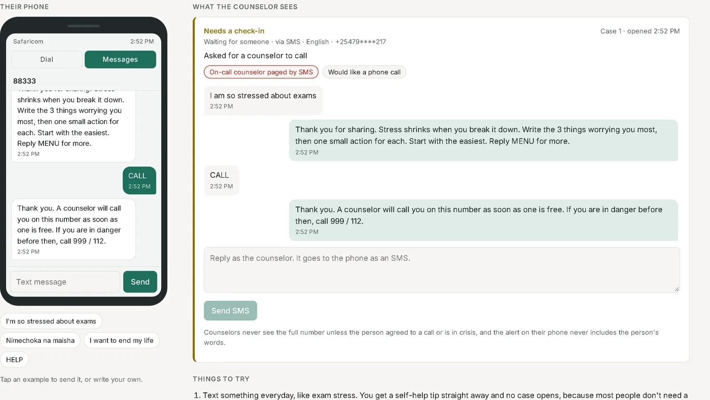

Case study
AmaniHaven: Mental Health Support on Any Phone

- Status
- Public demo live · Pilot proposal sent to Mental360 Kenya
- Built with
 Python
Python FastAPI
FastAPI- Claude API
- Pydantic
 SQLite
SQLite Docker
Docker- Africa's Talking
 pytest
pytest
- Engineering
- About 2,200 lines of app code · 74 automated tests
Overview
Free, confidential mental health support for anyone with a basic phone. People dial a USSD code or send an SMS and get grounding exercises and self-help straight away, in English or Kiswahili. When someone needs a person, a human counselor is alerted.
Project goal
Remove the four barriers that keep people from help: no smartphone or internet, cost, too few professionals, and stigma. Everything runs over USSD and SMS, so it works on any 2G phone with no app and no data.
What it does
- A USSD menu with breathing exercises, a four-question check-in (the PHQ-4 plus a safety question) and a way to ask for a call.
- Text the line in English or Kiswahili and get an instant reply from reviewed self-help content. Replies come back in the language the person writes in.
- Keywords like HELP, CALL and DELETE work at any time. DELETE erases everything stored about the person.
- Unclear messages get a direct, clinically standard question about safety instead of a guess.
- Counselors are paged only for crisis or abuse, or when someone asks for a call, and each person gets one case card.
Key screens
How it's built
- The AI never talks to users. Claude only classifies risk, and every word a user sees comes from one content file a clinician and a translator can review.
- Offline rules run first and always. Claude can raise a risk level but never lower it, so the service stays safe when the model is slow or off.
- Phone numbers are stored as a keyed hash plus an encrypted copy. Messages are encrypted and deleted after 30 days.
- A counselor dashboard shows the thread, replies by SMS, claims and closes cases, and logs every time a number is revealed.
- Replies are held to tested SMS segment budgets in GSM-7, so each one costs as little as possible.
Where it stands
The public demo runs the real triage and counselor flow on a pretend phone, and a pilot proposal has been sent to Mental360 Kenya.